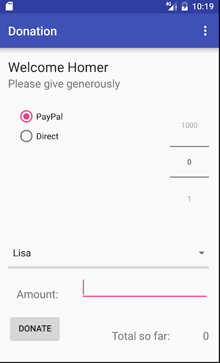

Objectives
Reintroduce the Donation Android app, refactor it to interact with the donation-web API
Donation-android app
This is the donation android app as we left it with Donation-03 lab:
If you have completed the last donation android lab, then you can use your own project. If not, use the above archive.
Libraries
Open the Build.Gradle file - there are two, so make sure it is the one into the 'app' folder:
apply plugin: 'com.android.application'
android {
compileSdkVersion 23
buildToolsVersion "23.0.3"
defaultConfig {
applicationId "app.donation"
minSdkVersion 19
targetSdkVersion 23
versionCode 1
versionName "1.0"
}
buildTypes {
release {
minifyEnabled false
proguardFiles getDefaultProguardFile('proguard-android.txt'), 'proguard-rules.pro'
}
}
}
dependencies {
compile fileTree(dir: 'libs', include: ['*.jar'])
testCompile 'junit:junit:4.12'
compile 'com.android.support:appcompat-v7:23.4.0'
}Then modify the dependencies section to include extra entries:
dependencies {
compile fileTree(dir: 'libs', include: ['*.jar'])
testCompile 'junit:junit:4.12'
compile 'com.android.support:appcompat-v7:23.4.0'
compile 'com.squareup.retrofit2:retrofit:2.1.0'
compile 'com.google.code.gson:gson:2.7'
compile 'com.squareup.retrofit2:converter-gson:2.0.2'
}Now open the androidManifext.xml file - and insert this new permission entry:
<uses-permission android:name="android.permission.INTERNET"/>This should be entered before the <application> element as shown here:
<manifest xmlns:android="http://schemas.android.com/apk/res/android"
package="app.donation" >
<uses-permission android:name="android.permission.INTERNET"/>
<application
....
....
....
</manifest>You may be offered the 'Sync Now' button - press it. If not, locate it and press it (it is on the toolbar)
The project should sync successfully.
Models - User & Donation
The current User and Donation classes need some minor adjustments. Specifically, we need to include an _id field:
Donation
package app.donation.model;
public class Donation
{
public String _id;
public int amount;
public String method;
public Donation (int amount, String method)
{
this.amount = amount;
this.method = method;
}
}User
package app.donation.model;
public class User
{
public String _id;
public String firstName;
public String lastName;
public String email;
public String password;
public User(String firstName, String lastName, String email, String password)
{
this.firstName = firstName;
this.lastName = lastName;
this.email = email;
this.password = password;
}
}We also need a new class to represent Candidates locally:
Candidate
package app.donation.model;
public class Candidate
{
public String _id;
public String firstName;
public String lastName;
public String office;
public Candidate(String firstName, String lastName, String office)
{
this.firstName = firstName;
this.lastName = lastName;
this.office = office;
}
}Proxy
In main package, introduce this DonationService class
DonationService
package app.donation.main;
import java.util.List;
import app.donation.model.Candidate;
import app.donation.model.Donation;
import app.donation.model.User;
import retrofit2.Call;
import retrofit2.http.Body;
import retrofit2.http.DELETE;
import retrofit2.http.GET;
import retrofit2.http.POST;
import retrofit2.http.Path;
public interface DonationService
{
@GET("/api/users")
Call<List<User>> getAllUsers();
@GET("/api/users/{id}")
Call<User> getUser(@Path("id") String id);
@POST("/api/users")
Call<User> createUser(@Body User User);
@GET("/api/donations")
Call<List<Donation>> getAllDonations();
@GET("/api/candidates")
Call<List<Candidate>> getAllCandidates();
@POST("/api/candidates/{id}/donations")
Call<Donation> createDonation(@Path("id") String id, @Body Donation donation);
}This class will server as a local interface for interacting with the remote service.
DontionApp
This class will require substantial additions. Here is a new version:
package app.donation.main;
import java.util.ArrayList;
import java.util.List;
import android.app.Application;
import android.util.Log;
import android.widget.Toast;
import com.google.gson.Gson;
import com.google.gson.GsonBuilder;
import app.donation.model.Candidate;
import app.donation.model.User;
import app.donation.model.Donation;
import retrofit2.Retrofit;
import retrofit2.converter.gson.GsonConverterFactory;
public class DonationApp extends Application
{
public DonationService donationService;
public boolean donationServiceAvailable = false;
public String service_url = "http://10.0.2.2:4000"; // Standard Emulator IP Address
public final int target = 10000;
public int totalDonated = 0;
public User currentUser;
public List <Donation> donations = new ArrayList<Donation>();
public List <User> users = new ArrayList<User>();
public List <Candidate> candidates = new ArrayList<Candidate>();
public boolean newDonation(Donation donation)
{
boolean targetAchieved = totalDonated > target;
if (!targetAchieved)
{
donations.add(donation);
totalDonated += donation.amount;
}
else
{
Toast toast = Toast.makeText(this, "Target Exceeded!", Toast.LENGTH_SHORT);
toast.show();
}
return targetAchieved;
}
@Override
public void onCreate()
{
super.onCreate();
super.onCreate();
Gson gson = new GsonBuilder().create();
Retrofit retrofit = new Retrofit.Builder()
.baseUrl(service_url)
.addConverterFactory(GsonConverterFactory.create(gson))
.build();
donationService = retrofit.create(DonationService.class);
Log.v("Donation", "Donation App Started");
}
public void newUser(User user)
{
users.add(user);
}
public boolean validUser (String email, String password)
{
for (User user : users)
{
if (user.email.equals(email) && user.password.equals(password))
{
currentUser = user;
return true;
}
}
return false;
}
}This version sets up a DonationService object - and makes this service object available for the activities. We will explore how it is used in the next few steps.
It also introduces a candidates collection and a url we should use to access the remote service.
Welcome
This is a new version of the Welcome Activity class
package app.donation.activity;
import app.donation.R;
import app.donation.activity.Login;
import app.donation.activity.Signup;
import app.donation.main.DonationApp;
import app.donation.model.Candidate;
import app.donation.model.User;
import retrofit2.Call;
import retrofit2.Callback;
import retrofit2.Response;
import android.content.Intent;
import android.os.Bundle;
import android.support.v7.app.AppCompatActivity;
import android.view.View;
import android.widget.Toast;
import java.util.List;
public class Welcome extends AppCompatActivity implements Callback<List<User>>
{
private DonationApp app;
@Override
public void onCreate(Bundle savedInstanceState)
{
super.onCreate(savedInstanceState);
setContentView(R.layout.activity_welcome);
app = (DonationApp) getApplication();
}
@Override
public void onResume()
{
super.onResume();
app.currentUser = null;
Call<List<User>> call1 = (Call<List<User>>) app.donationService.getAllUsers();
call1.enqueue(this);
Call<List<Candidate>> call2 = (Call<List<Candidate>>) app.donationService.getAllCandidates();
call2.enqueue(new Callback<List<Candidate>>() {
@Override
public void onResponse(Call<List<Candidate>> call, Response<List<Candidate>> response) {
app.candidates = response.body();
}
@Override
public void onFailure(Call<List<Candidate>> call, Throwable t) {
app.donationServiceAvailable = false;
serviceUnavailableMessage();
}
});
}
@Override
public void onResponse(Call<List<User>> call, Response<List<User>> response)
{
serviceAvailableMessage();
app.users = response.body();
app.donationServiceAvailable = true;
}
@Override
public void onFailure(Call<List<User>> call, Throwable t)
{
app.donationServiceAvailable = false;
serviceUnavailableMessage();
}
public void loginPressed (View view)
{
if (app.donationServiceAvailable)
{
startActivity (new Intent(this, Login.class));
}
else
{
serviceUnavailableMessage();
}
}
public void signupPressed (View view)
{
if (app.donationServiceAvailable)
{
startActivity (new Intent(this, Signup.class));
}
else
{
serviceUnavailableMessage();
}
}
void serviceUnavailableMessage()
{
Toast toast = Toast.makeText(this, "Donation Service Unavailable. Try again later", Toast.LENGTH_LONG);
toast.show();
}
void serviceAvailableMessage()
{
Toast toast = Toast.makeText(this, "Donation Contacted Successfully", Toast.LENGTH_LONG);
toast.show();
}
}onResume is issuing a request to the API for the list of all donors...
Call<List<Donor>> call1 = (Call<List<Donor>>) app.donationService.getAllDonors();
call1.enqueue(this);the response to this request is delivered into one of these two methods:
public void onResponse(Call<List<User>> call, Response<List<User>> response)
{
serviceAvailableMessage();
app.users = response.body();
app.donationServiceAvailable = true;
}
@Override
public void onFailure(Call<List<User>> call, Throwable t)
{
app.donationServiceAvailable = false;
serviceUnavailableMessage();
}onResponse indicates success - so we store the donors in the app objects. onFailure sets a flag in app, and displays an error message.
We are also doing something similiar here:
Call<List<Candidate>> call2 = (Call<List<Candidate>>) app.donationService.getAllCandidates();
call2.enqueue(new Callback<List<Candidate>>() {
@Override
public void onResponse(Call<List<Candidate>> call, Response<List<Candidate>> response) {
app.candidates = response.body();
}
@Override
public void onFailure(Call<List<Candidate>> call, Throwable t) {
app.donationServiceAvailable = false;
serviceUnavailableMessage();
}
});This time we are requesting a list of candidates from the remote service, and storing them in the app object. We are using an anonymous inner class instead of the Welcome class as the implementor of the callback interface.
Run the app now (make sure the donation-service is running). You should get the 'Donation Contacted Successfully' messages. If not, we will need to discover why before proceeding to next steps...
Signup Activity
We can rework the Signup Activity to create and send new user registrations to the remote service:
package app.donation.activity;
import android.content.Intent;
import android.support.v7.app.AppCompatActivity;
import android.os.Bundle;
import android.view.View;
import android.widget.TextView;
import android.widget.Toast;
import app.donation.R;
import app.donation.main.DonationApp;
import app.donation.model.User;
import retrofit2.Call;
import retrofit2.Callback;
import retrofit2.Response;
import retrofit2.Retrofit;
public class Signup extends AppCompatActivity implements Callback<User>
{
private DonationApp app;
@Override
protected void onCreate(Bundle savedInstanceState)
{
super.onCreate(savedInstanceState);
setContentView(R.layout.activity_signup);
app = (DonationApp) getApplication();
}
public void signupPressed (View view)
{
TextView firstName = (TextView) findViewById(R.id.firstName);
TextView lastName = (TextView) findViewById(R.id.lastName);
TextView email = (TextView) findViewById(R.id.Email);
TextView password = (TextView) findViewById(R.id.Password);
User user = new User(firstName.getText().toString(), lastName.getText().toString(), email.getText().toString(), password.getText().toString());
DonationApp app = (DonationApp) getApplication();
Call<User> call = (Call<User>) app.donationService.createUser(user);
call.enqueue(this);
}
@Override
public void onResponse(Call<User> call, Response<User> response)
{
app.users.add(response.body());
startActivity(new Intent(this, Welcome.class));
}
@Override
public void onFailure(Call<User> call, Throwable t)
{
app.donationServiceAvailable = false;
Toast toast = Toast.makeText(this, "Donation Service Unavailable. Try again later", Toast.LENGTH_LONG);
toast.show();
startActivity (new Intent(this, Welcome.class));
}
}Run the app now - and sign up a new user. It should work successfully. The significant changes are here:
- We send a new User details to the service here:
Call<User> call = (Call<User>) app.donationService.createUser(user);
call.enqueue(this);- we deal with the responses here:
@Override
public void onResponse(Call<User> call, Response<User> response)
{
app.users.add(response.body());
startActivity(new Intent(this, Welcome.class));
}
@Override
public void onFailure(Call<User> call, Throwable t)
{
app.donationServiceAvailable = false;
Toast toast = Toast.makeText(this, "Donation Service Unavailable. Try again later", Toast.LENGTH_LONG);
toast.show();
startActivity (new Intent(this, Welcome.class));
}To verify that is has worked, check the api for the new donor:
You should see the new user listed.
If it is not working correctly at this stage - you will need to discover why before moving on to the next steps.
Donate Layout
We now need to adjust the Donate activity view to also allow the user to select the candidate:

The spinner should display the candidates:
This is the layout file for activity_donate which include a new spinner control:
<RelativeLayout xmlns:android="http://schemas.android.com/apk/res/android"
xmlns:tools="http://schemas.android.com/tools"
android:layout_width="match_parent"
android:layout_height="match_parent"
android:paddingBottom="@dimen/activity_vertical_margin"
android:paddingLeft="@dimen/activity_horizontal_margin"
android:paddingRight="@dimen/activity_horizontal_margin"
android:paddingTop="@dimen/activity_vertical_margin"
tools:context=".activity.Donate" >
<TextView
android:id="@+id/donateTitle"
android:layout_width="wrap_content"
android:layout_height="wrap_content"
android:layout_alignParentLeft="true"
android:layout_alignParentRight="true"
android:layout_alignParentTop="true"
android:text="@string/donateTitle"
android:textAppearance="?android:attr/textAppearanceLarge" />
<TextView
android:id="@+id/donateSubtitle"
android:layout_width="wrap_content"
android:layout_height="wrap_content"
android:layout_alignParentLeft="true"
android:layout_alignParentRight="true"
android:layout_below="@+id/donateTitle"
android:text="@string/donateSubtitle"
android:textAppearance="?android:attr/textAppearanceMedium" />
<RadioGroup
android:id="@+id/paymentMethod"
android:layout_width="wrap_content"
android:layout_height="wrap_content"
android:layout_above="@+id/progressBar"
android:layout_alignLeft="@+id/donateSubtitle"
android:layout_below="@+id/donateSubtitle"
android:layout_marginLeft="14dp"
android:layout_marginTop="26dp"
android:layout_toLeftOf="@+id/amountPicker" >
<RadioButton
android:id="@+id/PayPal"
android:layout_width="wrap_content"
android:layout_height="wrap_content"
android:checked="true"
android:text="@string/PayPal" />
<RadioButton
android:id="@+id/Direct"
android:layout_width="wrap_content"
android:layout_height="wrap_content"
android:text="@string/Direct" />
</RadioGroup>
<ProgressBar
android:id="@+id/progressBar"
style="?android:attr/progressBarStyleHorizontal"
android:layout_width="wrap_content"
android:layout_height="wrap_content"
android:layout_above="@+id/donateButton"
android:layout_alignParentLeft="true"
android:layout_alignParentRight="true"
android:layout_marginBottom="67dp" />
<NumberPicker
android:id="@+id/amountPicker"
android:layout_width="wrap_content"
android:layout_height="wrap_content"
android:layout_alignRight="@+id/donateSubtitle"
android:layout_alignTop="@+id/paymentMethod" />
<EditText
android:id="@+id/amountText"
android:layout_width="wrap_content"
android:layout_height="wrap_content"
android:layout_above="@+id/donateButton"
android:layout_alignParentRight="true"
android:layout_marginBottom="20dp"
android:ems="10"
android:inputType="number" >
<requestFocus />
</EditText>
<TextView
android:id="@+id/amountLabel"
android:layout_width="wrap_content"
android:layout_height="wrap_content"
android:layout_alignBottom="@+id/amountText"
android:layout_alignLeft="@+id/paymentMethod"
android:labelFor="@id/amountText"
android:text="@string/amount"
android:textAppearance="?android:attr/textAppearanceMedium" />
<Button
android:id="@+id/donateButton"
android:layout_width="wrap_content"
android:layout_height="wrap_content"
android:layout_alignParentBottom="true"
android:layout_alignParentLeft="true"
android:layout_marginBottom="15dp"
android:onClick="donateButtonPressed"
android:text="@string/donateButton" />
<TextView
android:id="@+id/amountTotal"
android:layout_width="wrap_content"
android:layout_height="wrap_content"
android:layout_alignBottom="@+id/donateButton"
android:layout_alignRight="@+id/amountText"
android:text="@string/initialAmount"
android:textAppearance="?android:attr/textAppearanceMedium" />
<TextView
android:id="@+id/totalLabel"
android:layout_width="wrap_content"
android:layout_height="wrap_content"
android:layout_alignBaseline="@+id/amountTotal"
android:layout_alignBottom="@+id/amountTotal"
android:layout_toLeftOf="@+id/amountPicker"
android:text="@string/amountSoFarLabel"
android:textAppearance="?android:attr/textAppearanceMedium" />
<Spinner
android:layout_width="match_parent"
android:layout_height="wrap_content"
android:layout_alignBottom="@+id/progressBar"
android:layout_centerHorizontal="true"
android:id="@+id/spinner"/>
</RelativeLayout>Donate
We will take Donate step by step this time to gain a better understanding of how the service is accessed.
First, in Donate Activity, bring in these imports:
import retrofit2.Call;
import retrofit2.Callback;
import retrofit2.Response;
import retrofit2.Retrofit;We need a new Adapter to handle the spinner we have just introduced to present the candidates list:
private class CandidateAdapter extends BaseAdapter implements SpinnerAdapter {
private final List<Candidate> data;
public CandidateAdapter(List<Candidate> data) {
this.data = data;
}
@Override
public int getCount() {
return data.size();
}
@Override
public Object getItem(int position) {
return data.get(position);
}
@Override
public long getItemId(int i) {
return i;
}
@Override
public View getView(int position, View recycle, ViewGroup parent) {
TextView text;
if (recycle != null) {
text = (TextView) recycle;
} else {
text = (TextView) getLayoutInflater().inflate(
android.R.layout.simple_dropdown_item_1line, parent, false
);
}
text.setTextColor(Color.BLACK);
text.setText(data.get(position).firstName);
return text;
}
}Npw implement the following interface in the class:
public class Donate extends AppCompatActivity implements Callback<Donation>This will cause an error - and android studio may be able to suggest fixes via the following menu:

Which will generate these methods:
@Override
public void onResponse(Call<Donation> call, Response<Donation> response)
{
}
@Override
public void onFailure(Call<Donation> call, Throwable t)
{
}In the onCreate method, we initialise this spinner with the candidates list:
candidateSelection = (Spinner) findViewById(R.id.spinner);
CandidateAdapter adapter = new CandidateAdapter(app.candidates);
candidateSelection.setAdapter(adapter);We now change part of our donateButtonPressed method to make the call to the service:
...
if (donatedAmount > 0)
{
Donation donation = new Donation(donatedAmount, method);
Candidate candidate = (Candidate) candidateSelection.getSelectedItem();
Call<Donation> call = (Call<Donation>) app.donationService.createDonation(candidate._id, donation);
call.enqueue(this);
}
...... and finally, the response/error methods can be implemented:
@Override
public void onResponse(Call<Donation> call, Response<Donation> response)
{
Toast toast = Toast.makeText(this, "Donation Accepteed", Toast.LENGTH_SHORT);
toast.show();
app.newDonation(response.body());
progressBar.setProgress(app.totalDonated);
String totalDonatedStr = "$" + app.totalDonated;
amountTotal.setText(totalDonatedStr);
amountText.setText("");
amountPicker.setValue(0);
}
@Override
public void onFailure(Call<Donation> call, Throwable t)
{
Toast toast = Toast.makeText(this, "Error making donation", Toast.LENGTH_LONG);
toast.show();
}Run this now - and you should see 'donation accepted' message.
Check the api to see if it is there:
Also check the specific donors donations:
(id XXXXXX in the above)
Complete Version of the Donation Class at this stage:
package app.donation.activity;
import android.content.Intent;
import android.graphics.Color;
import android.support.v7.app.AppCompatActivity;
import android.os.Bundle;
import android.view.Menu;
import android.view.MenuItem;
import android.view.View;
import android.view.ViewGroup;
import android.widget.BaseAdapter;
import android.widget.Button;
import android.widget.EditText;
import android.widget.RadioGroup;
import android.widget.NumberPicker;
import android.widget.ProgressBar;
import android.widget.Spinner;
import android.widget.SpinnerAdapter;
import android.widget.TextView;
import android.widget.Toast;
import java.util.List;
import app.donation.R;
import app.donation.main.DonationApp;
import app.donation.model.Candidate;
import app.donation.model.Donation;
import retrofit2.Call;
import retrofit2.Callback;
import retrofit2.Response;
import retrofit2.Retrofit;
public class Donate extends AppCompatActivity implements Callback<Donation>
{
private Button donateButton;
private RadioGroup paymentMethod;
private ProgressBar progressBar;
private NumberPicker amountPicker;
private int totalDonated;
private int target;
private TextView amountText;
private TextView amountTotal;
private Spinner candidateSelection;
private DonationApp app;
@Override
protected void onCreate(Bundle savedInstanceState) {
super.onCreate(savedInstanceState);
setContentView(R.layout.activity_donate);
app = (DonationApp) getApplication();
donateButton = (Button) findViewById(R.id.donateButton);
paymentMethod = (RadioGroup) findViewById(R.id.paymentMethod);
progressBar = (ProgressBar) findViewById(R.id.progressBar);
amountPicker = (NumberPicker) findViewById(R.id.amountPicker);
amountTotal = (TextView) findViewById(R.id.amountTotal);
amountText = (EditText) findViewById(R.id.amountText);
amountPicker.setMinValue(0);
amountPicker.setMaxValue(1000);
progressBar.setMax(10000);
totalDonated = 0;
target = 10000;
candidateSelection = (Spinner) findViewById(R.id.spinner);
CandidateAdapter adapter = new CandidateAdapter(app.candidates);
candidateSelection.setAdapter(adapter);
}
@Override
public boolean onCreateOptionsMenu(Menu menu) {
// Inflate the menu; this adds items to the action bar if it is present.
getMenuInflater().inflate(R.menu.menu_donate, menu);
return true;
}
public void donateButtonPressed(View view) {
String method = paymentMethod.getCheckedRadioButtonId() == R.id.PayPal ? "PayPal" : "Direct";
int donatedAmount = amountPicker.getValue();
if (donatedAmount == 0) {
String text = amountText.getText().toString();
if (!text.equals("")) {
donatedAmount = Integer.parseInt(text);
}
}
if (donatedAmount > 0)
{
Donation donation = new Donation(donatedAmount, method);
Candidate candidate = (Candidate) candidateSelection.getSelectedItem();
Call<Donation> call = (Call<Donation>) app.donationService.createDonation(candidate._id, donation);
call.enqueue(this);
}
amountText.setText("");
amountPicker.setValue(0);
}
@Override
public boolean onOptionsItemSelected(MenuItem item) {
switch (item.getItemId()) {
case R.id.menuReport:
startActivity(new Intent(this, Report.class));
break;
case R.id.menuLogout:
startActivity(new Intent(this, Welcome.class));
break;
}
return true;
}
@Override
public void onResponse(Call<Donation> call, Response<Donation> response)
{
Toast toast = Toast.makeText(this, "Donation Accepteed", Toast.LENGTH_SHORT);
toast.show();
app.newDonation(response.body());
progressBar.setProgress(app.totalDonated);
String totalDonatedStr = "$" + app.totalDonated;
amountTotal.setText(totalDonatedStr);
amountText.setText("");
amountPicker.setValue(0);
}
@Override
public void onFailure(Call<Donation> call, Throwable t)
{
Toast toast = Toast.makeText(this, "Error making donation", Toast.LENGTH_LONG);
toast.show();
}
private class CandidateAdapter extends BaseAdapter implements SpinnerAdapter {
private final List<Candidate> data;
public CandidateAdapter(List<Candidate> data) {
this.data = data;
}
@Override
public int getCount() {
return data.size();
}
@Override
public Object getItem(int position) {
return data.get(position);
}
@Override
public long getItemId(int i) {
return i;
}
@Override
public View getView(int position, View recycle, ViewGroup parent) {
TextView text;
if (recycle != null) {
text = (TextView) recycle;
} else {
text = (TextView) getLayoutInflater().inflate(
android.R.layout.simple_dropdown_item_1line, parent, false
);
}
text.setTextColor(Color.BLACK);
text.setText(data.get(position).firstName);
return text;
}
}
}Exercises
Archive of project so far:
Exercise 1: Heroku
Test the android application against the the heroku deployed service.
You will need to insert the appropriate url into the DonationApp:
public String service_url = "http://10.0.2.2:9000"; // Standard Emulator IP AddressExercise 2: Report
The report class merely lists the donations made on this device:
...
listView = (ListView) findViewById(R.id.reportList);
DonationAdapter adapter = new DonationAdapter(this, app.donations);
listView.setAdapter(adapter);
...Change the way this works, such that we display all of the latest donations by requesting them directly form the donation-web service.